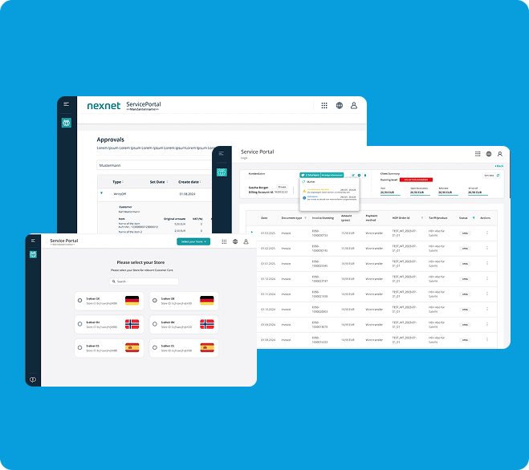
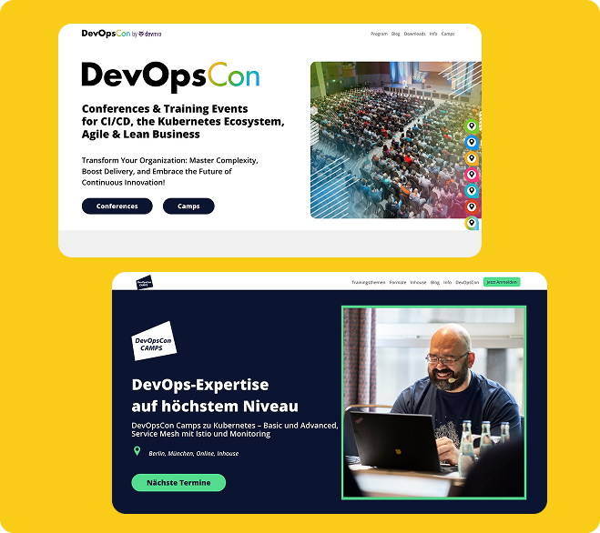
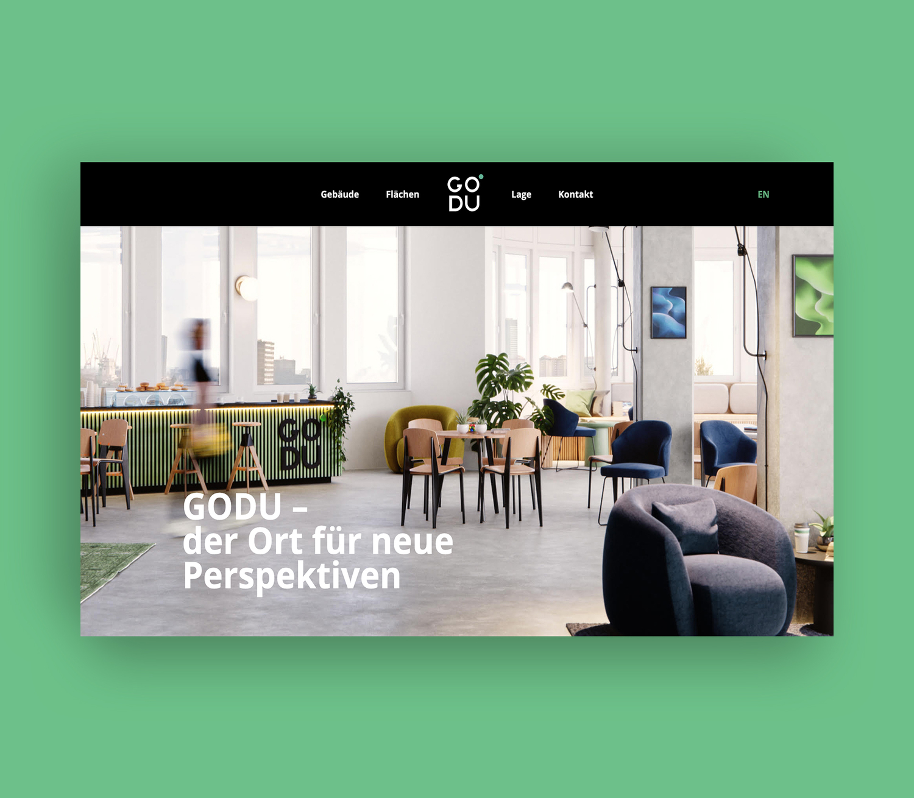

Selected Work & Experience

NEXNET GmbH — 2024–26
Unified design direction across a complex CRM product
As Art Director & Senior UX Designer, I led the digital product design efforts — conducting user research and workshops to define requirements, collaborating closely with product owners, developers, and management to create refined solutions. My main mission was to make a unified design direction aligned with both business goals and customer needs, adjusting the CRM system from a subscription to e-commerce model.

Software & Support Media — 2023
Multi-brand design framework for concurrent content at scale
As a Freelance Art Director & UI/UX Designer, I collaborated closely with management, developers, and the design team to create flexible designs and adjusted brand colors. I redesigned the websites and ensured all elements supported a consistent, user-friendly experience despite frequent content updates by different teams.

GODU Berlin — 2021
Visual identity and product direction for a Berlin-based startup
As Art Director, I led the design and development teams through the full workflow — from concept ideation and wireframes to core decisions and final execution. I oversaw every detail to ensure consistency, quality, and a user-centered approach. The project required reconciling a clear visual identity and ambitious product vision with technical constraints and tight timelines.

YS Realestate — 2021
Cross-cultural design strategy for bilingual German–Hebrew markets
As Art Director, UI/UX Designer, and Team Lead, I developed wireframes and design solutions that resonated with both audiences. I balanced cultural sensitivity, language differences, and design aesthetics to create a unified visual identity — ensuring effective communication and engagement across both German (DE) and Hebrew (HE) versions, while accounting for audience variations and design nuances.
Self-employed
Freelance Art Director & UI/UX Designer
Independent Practice · Berlin
Led end-to-end design across 7+ years of independent practice — from creative direction and product branding to interface design and launch. Worked closely with clients, stakeholders, and cross-functional teams to deliver tailored digital experiences across startups and established organisations.